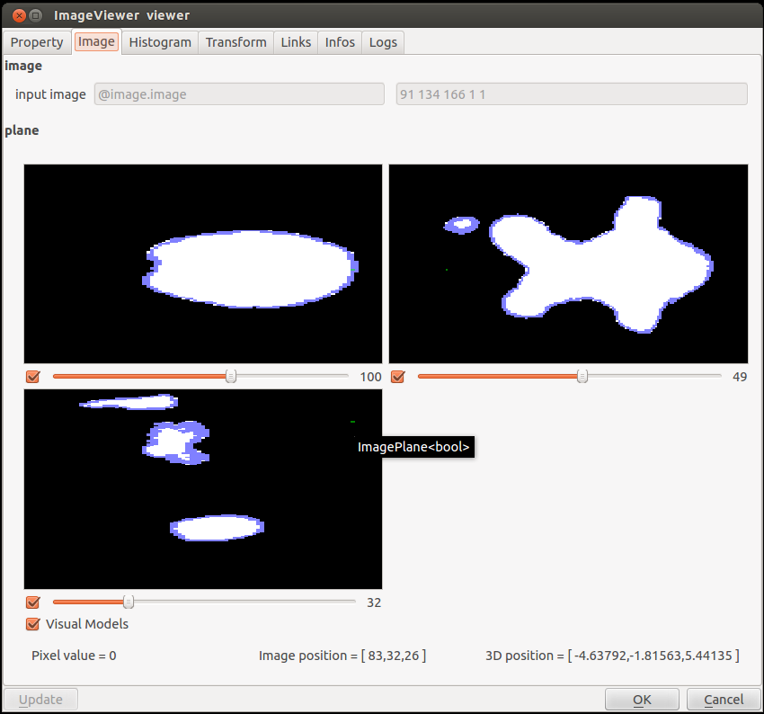

Image MeshToImage Example
This example scene shows an example of the Image plugin, which computes a rasterization image from a mesh.
It can be seen as an inverse processing of marchingCube: a 3D voxel image (binary) is created from the mesh so that
the voxel values inside the mesh object are 1 and the ones outside the mesh object are 0. You can visualize the cut plan in the
mesh by setting it in the ImageViewer.
To run it, you need to load image Plugin using the Plugin Manager of the GUI, or the command line.

